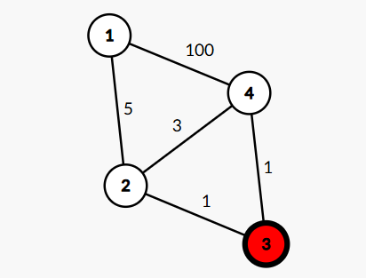
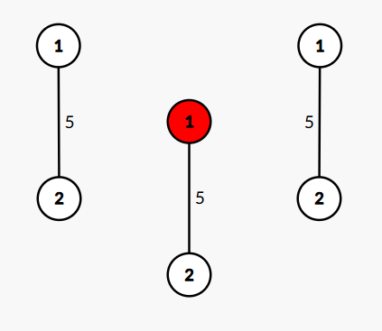

Vishwas was planning a surprise for his 6-month relationship anniversary — a romantic treasure hunt across their college campus. Each stop had sentimental value: the bench where they first talked, the library where they exchanged notes, and their favorite corner in the canteen.
Just days before the big event, the campus was struck by sudden renovations. Many key locations were unexpectedly blocked off, and Vishwas was on the verge of giving up.
That's when Kanav, his best friend and problem-solving genius, stepped in to help. He modeled the entire campus as a weighted undirected graph, where:
Each node represents a location.
Kanav implemented a system that supports two types of dynamic operations:
Your task is to help Kanav power Vishwas's plan by implementing this dynamic system.
The first line contains a single integer $$$t$$$ — the number of test cases. $$$(1 \le t \le 10)$$$
Each test case consists of the following:
The first line contains three integers $$$n$$$, $$$m$$$, and $$$q$$$ — the number of nodes, edges, and queries, respectively. $$$(2 \le n \le 1000,\ 1 \le m \le 1000,\ 1 \le q \le 10^4)$$$
The next $$$m$$$ lines each contain three integers $$$u$$$, $$$v$$$, and $$$w$$$ — representing an undirected edge between nodes $$$u$$$ and $$$v$$$ with weight $$$w$$$. $$$(1 \le u, v \le n,\ 1 \le w \le 10^9)$$$
The next line contains a string of length $$$n$$$ consisting only of characters '.' and 'x', representing the initial status of each location ('.' indicates that the location is open) and ('x' indicates that the location is blocked).
The next $$$q$$$ lines each contain a query starting with $$$a_i\ $$$— where:
Note:
For each query of type 0 x y, print the minimum total time (sum of edge weights) from node x to node y using only unblocked nodes. If no path exists, print -1.
Note: If x and y are same nodes output 0. And if either one of them is blocked then output -1.
14 5 51 2 52 3 13 4 11 4 1002 4 3..x.0 1 41 30 1 41 30 1 4
8 7 8
12 1 101 2 5..0 1 20 1 10 2 21 10 1 20 1 10 2 21 10 1 20 2 1
5 0 0 -1 -1 0 5 5
For first example, it given that there are total 4 nodes and 5 edges. Then next 5 lines represent 5 weighted edges.
Also in the string "..x.", it is given that Node 3 is blocked initially, hence graph will look like this.

Similarly for the second example graph goes as follows after each toggle.
